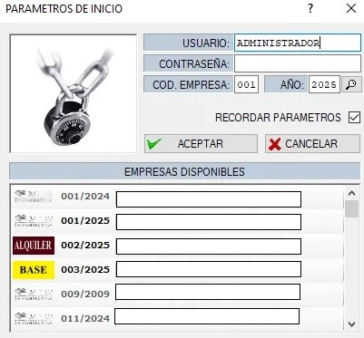
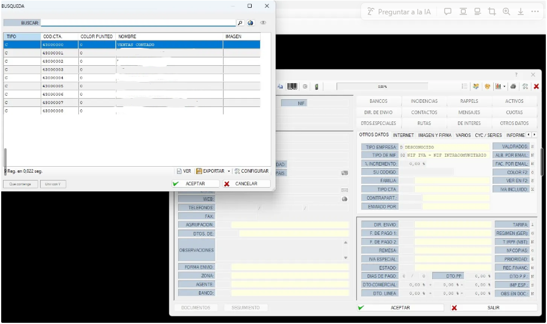

1. Cómo entrar en nuestro MAIS
El MAIS cuenta con una lista de usuarios. Normalmente existen dos tipos principales:
- Programador (no accesible para un cliente estándar)
- Administrador (uso completo del sistema)

Si no tienes un usuario creado, contacta con el administrador del sistema para que te proporcione uno.
⌨️ 1.1. Atajos de teclado rápidos
Existen tres atajos esenciales que agilizan el trabajo en el MAIS:
F2 – Ver listas desplegables
Si pulsas F2 sobre una casilla (por ejemplo, Clientes), aparecerá una lista con todos los registros disponibles.
Abajo podrás pulsar Configurar para mostrar más campos de la lista.

“+” – Crear código automático
Al pulsar + en el teclado, el sistema genera automáticamente el siguiente código disponible, comenzando desde 0 y siguiendo de forma descendente.
Doble clic – Acceso directo
Con un doble clic sobre una casilla podrás acceder directamente a su ficha.
Ejemplo: Si la casilla Formas de agrupación está vacía, puedes hacer doble clic para abrir todas las formas disponibles e incluso crear una nueva.